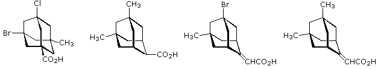
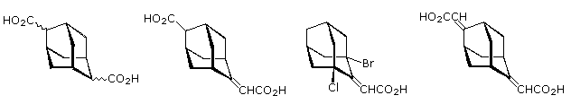

1. The following compounds may exist as two or more stereoisomers. These may be classified as enantiomer pairs or achiral diastereomers. Select a compound by clicking the button beneath its structure, and then enter the number of isomer types in the appropriate answer box.

